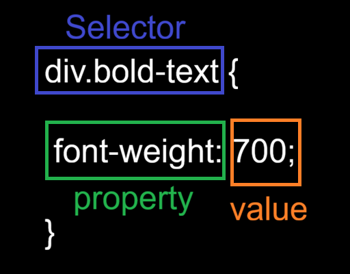
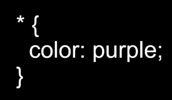
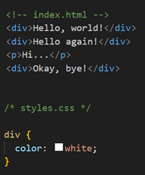
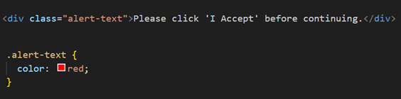
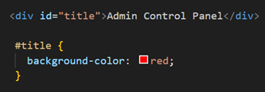
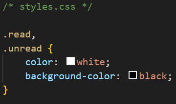
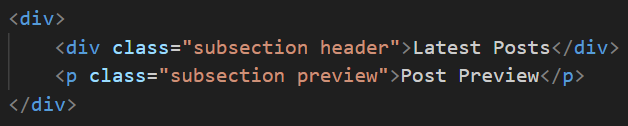
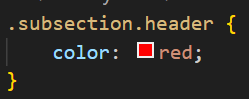
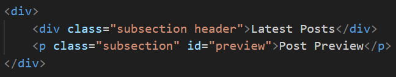
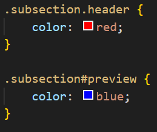

CSS is used to style a website! HTML will only build the basic foundations of a website, whilst CSS (stands for Cascading Style Sheets) will allow the developer to add style.
CSS is made up of various rules. Each rule has it's own selector (explained later) and a semicolon-separated list of declarations, with each of those declarations being made up of a property-value pair, which can be seen in the image below.

Selectors refer to the HTML elements to which CSS styles rules apply. It is what is being selected for each rule. The most common ones are shown below.
The universal selector will select elements of every type. The syntax for the universal selector is the asterisk. The example below would turn every element to have purple text.

A tyle selector (or element selector) will select all elements of the given type. The image below uses the div selector which will only apply the style to any div elements. The paragraph element here will be ignored.

Class selectors will select all elements with the given class attribute. The example below shows how to achieve this.

NOTE: The syntax for class selectors has a period at the very beginning, followed by the selector name. Classes aren't required to be specific to any element, so they can be used on multiple elements in which the same behaviour will apply.
Class selectors won't work if the class name begins with a number. If a selector is something like 4alert-text, it won't work. Always keep selector names to characters only. It is common practise to use a hyphen when separating out words, instead of a space or underscore.
Applying multiple classes to an element can be done by simply putting a space between the class names. As an example, using alert-text space severe-alert.
ID selectors are very similar to class selectors. They can be used by using the id attribute within an element. However, IDs can only have one ID, unlike classes.
Instead of using a period at the start, a hastag is used instead. The image below shows an example.

NOTE: Like classes, IDs cannot start with a number either.
Selectors can be grouped together by using a comma separated list like the example below.

This avoid repition if two css rules share the same styles. The above will apply to any element that has the read and unread class.
Another way to use selectors is to chain them as a list without any separation.
Say we had the following HTML below:

Two elements have the subsection class that have some sort of unique styles, but what if we only want to apply a separate rule to the element that also has header as a second class? They can be chained together like so in CSS:

The .subsection.header does, it selects any element that has both the subsection and header classes. This syntax works for chaining any combination of selectors, except for chaining more than one type selector.
The same method can be applied to chain a class and and id element together:

Both elements from above can be combined with the following CSS:

You can't chain more than one type selector since an element can't be two different types at once.
For example; chaining two type selectors like div and p would give the selector divp, which isn't a valid HTML element.